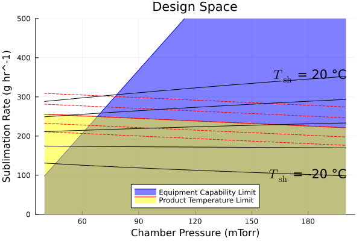

Generating Design Spaces
One of the main purposes of the models that LyoPronto implements is to generate design spaces for lyophilization processes. The design space graphically represents the range of operating conditions that will produce a successful lyophilization process, and can be used to guide the development of a lyophilization cycle.
A few different types of design space for the process are common in literature. One uses the two main process variables, shelf temperature and chamber pressure, as plot axes. The other uses chamber pressure on the horizontal axis and puts sublimation flux on the vertical axis, which makes equipment capability and product temperature limits neatly linear. We will demonstrate this here.
using LyoPronto
using PlotsTo construct this design space, we need to use heat and mass transfer behavior. This is stored in a ParamObjPikal object for the Pikal model.
# Vial size
Ap, Av = π .*get_vial_radii("6R").^2 # cross-sectional area inside the vial
# Product information
Vfill = 3u"mL" # ml
csolid = 0.06u"g/mL" # g solute / mL solution
ρsolution = 1u"g/mL" # g/mL total solution density
hf0 = Vfill / Ap # initial fill height in the vial
# Mass transfer resistance
R0 = 0.8u"cm^2*Torr*hr/g"
A1 = 28.0u"cm*Torr*hr/g"
A2 = 1.0u"1/cm"
Rp = RpFormFit(R0, A1, A2)
# Heat transfer coefficient
KC = 2.75e-4u"cal/s/K/cm^2"
KP = 8.93e-4u"cal/s/K/cm^2/Torr"
KD = 0.46u"1/Torr"
Kshf = RpFormFit(KC, KP, KD)
# Shelf temprature, with exact initial and ramprate and dummy final setpoint
Tsh = RampedVariable([-15u"°C", 10u"°C"].|>u"K", 0.5u"K/minute")
# Dummy chamber pressure
pch = RampedVariable(70u"mTorr")
# Full object
po = ParamObjPikal((
(Rp, hf0, csolid, ρsolution),
(Kshf, Av, Ap),
(pch, Tsh)
))ParamObjPikal{}(RpFormFit{}(0.8 hr cm^2 Torr g^-1, 28.0 hr cm Torr g^-1, 1.0 cm^-1), 0.00954929658551372 mL mm^-2, 0.06 g mL^-1, 1 g mL^-1, RpFormFit{}(0.000275 cal K^-1 cm^-2 s^-1, 0.000893 cal K^-1 cm^-2 s^-1 Torr^-1, 0.46 Torr^-1), 380.132711084365 mm^2, 314.1592653589793 mm^2, RampedVariable(70 mTorr), RampedVariable(Unitful.Quantity{Rational{Int64}, 𝚯, Unitful.FreeUnits{(K,), 𝚯, nothing}}[5163//20 K, 5663//20 K], 0.5 K minute^-1))We need to specify some more information to construct the design space.
n_vials = 1000 # number of vials in the batch
T_crit = -15.0u"°C" # product temperature limit-15.0 °CThe equipment capability limit will be specified as a function of chamber pressure. If you don't have measurements of this yet but know your lyophilizer's dimensions, you can get a rough estimate with the EC-CURT model from Kazarin et al. (2021), provided here as LyoPronto.ECCURT.eq_cap_line, see also Estimating Equipment Capability.
# If you already know this, it can be specified this simply:
eqcap = pch -> 0.5u"g/hr" + 0.0025u"g/hr/mTorr" * pch # g/hr as a function of chamber pressure
# Some example lyophilizer dimensions, for demonstration of EC-CURT model
D = 120u"mm"
vth = 30u"mm"
L = 400u"mm"
V = 0.192u"m^3"
eqcap = ECCURT.eq_cap_line(D, vth, L, V) # This gives us a callable, as a function of pressureLyoPronto.ECCURT.ECLine{Unitful.Quantity{Float64, 𝐋 𝐓, Unitful.FreeUnits{(kg, hr^-1, mTorr^-1), 𝐋 𝐓, nothing}}, Unitful.Quantity{Float64, 𝐌 𝐓^-1, Unitful.FreeUnits{(kg, hr^-1), 𝐌 𝐓^-1, nothing}}}(0.005405126691836758 kg hr^-1 mTorr^-1, -0.1179102935642039 kg hr^-1)Now, we need to choose pressure and shelf temperature ranges to draw on our design space.
pch_range = (40:20:200)u"mTorr" # from 50 to 300 mTorr in 20 mTorr increments
Tsh_range = (-20u"°C":10u"K":20u"°C") # from -20 to 20 °C in 5 °C increments
Tpr_range = T_crit .+ (-2u"K":1u"K":2u"K") # from 2 °C below to 2 °C above the product temperature limit in 1 °C increments(256.15:1.0:260.15) KDo the actual design space calculation:
# Calculate shelf temperature isotherms:
iso_Tsh = [LyoPronto.ds_shelf_isotherm(Tsh, pch_range, po) for Tsh in Tsh_range]
# Calculate product temperature isotherms:
iso_Tpr = [LyoPronto.ds_product_isotherm(Tpr, pch_range, po) for Tpr in Tpr_range];Now we can plot the design space. The shelf temperature isotherms are plotted in black, the product temperature isotherms in red, and the equipment capability limit in blue.
Note that the shelf temperature isotherms should be plotted for the maximum mass flow rate, which is the worst case scenario; and the product temperature isotherms should be plotted for a minimum mass flow rate, which is the worst case scenario. For the Pikal model, this minimum mass flow rate occurs at the end of drying.
dsp = plot(u"mTorr", u"g/hr", ylabel="Sublimation Rate", xlabel="Chamber Pressure", title="Design Space", )
plot!(pch_range, eqcap.(pch_range), color=:blue, fillto=0.0u"g/hr", fillalpha=0.5, label="Equipment Capability Limit")
# Index 3 is the actual critical temperature isotherm, so we can highlight it with a filled area
plot!(iso_Tpr[3].pch, iso_Tpr[3].end_md .* n_vials; seriescolor=:red,
label="Product Temperature Limit",
fillto = 0.0u"g/hr", fillcolor = :yellow, fillalpha=0.5)
# Draw dotted lines for the other isotherms
for (i, Tpr) in enumerate(Tpr_range)
# When plotting mass fluxes, multiply by the number of vials
plot!(iso_Tpr[i].pch, iso_Tpr[i].end_md .* n_vials;
seriescolor=:red, label="", linestyle=:dash)
end
for (i, Tsh) in enumerate(Tsh_range)
# When plotting mass fluxes, multiply by the number of vials
plot!(iso_Tsh[i].pch, iso_Tsh[i].max_md .* n_vials, color=:black, label="")
# Annotate the last point of the first and last isotherms
i ∈ (1, length(Tsh_range)) && annotate!(
[pch_range[end]], iso_Tsh[i].max_md[end] .* n_vials,
("\$T_\\mathrm{sh}\$ = $(round(Int, ustrip(u"°C", Tsh))) °C", :right,))
end
plot!(ylim=(0, 500), legend=:bottom) # Manually identified to make the plot easier to read
dsp
The optimal design point is at the intersection of the critical temperature and the equipment capability (then scoot down a little bit to provide a safety margin). For the conditions used here, that falls around $p_\mathrm{ch} = 80 \mathrm{mTorr}$ and $T_\mathrm{sh} = 20 °C$.
This page was generated using Literate.jl.